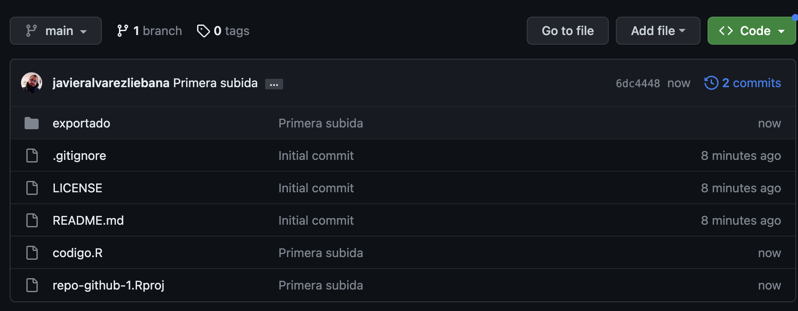
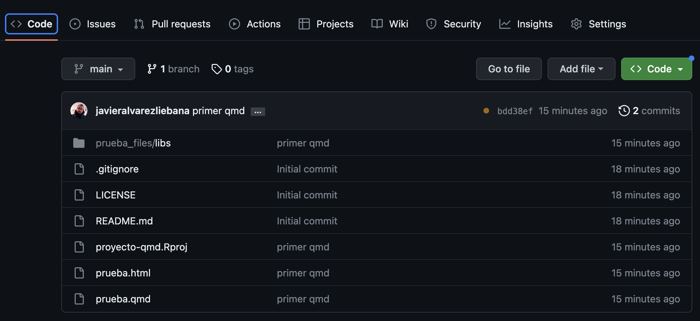
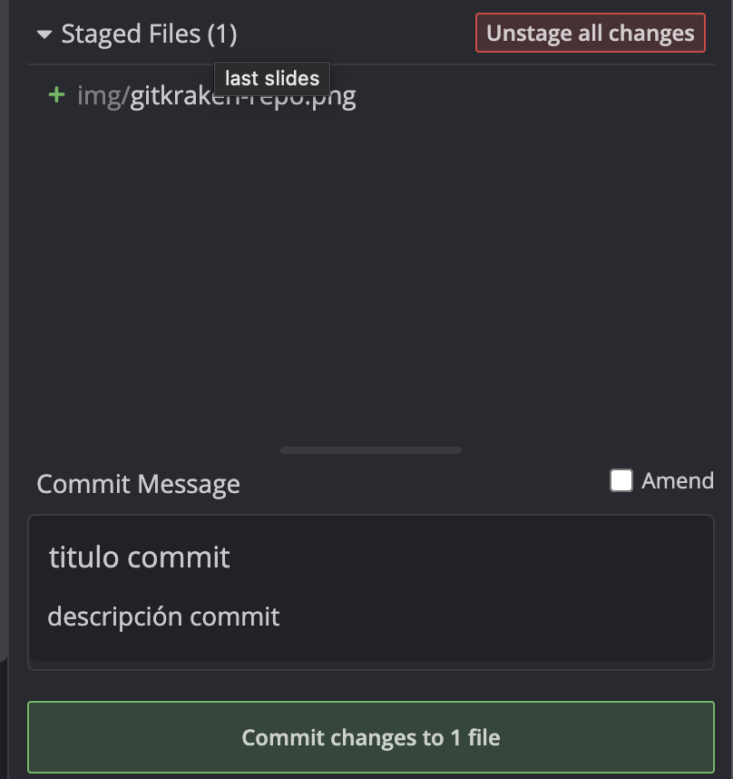
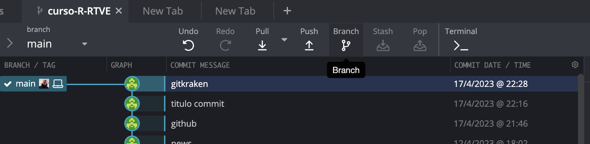
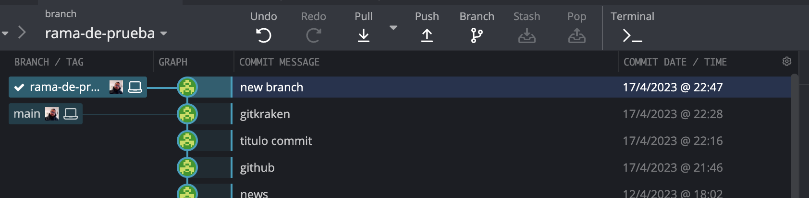

Licenciado en Matemáticas (UCM). Doctorado en estadística (UGR).
Encargado de la visualización y análisis de datos covid del Principado de Asturias (2021-2022).
Miembro de la Sociedad Española de Estadística e IO y la Real Sociedad Matemática Española.
Actualmente, investigador y docente en la Facultad de Estadística de la UCM. Divulgando por Twitter e Instagram
Objetivos
Empezar a relacionar asignaturas como matemáticas, inferencia y R.
Aprender los fundamentos del aprendizaje estadístico (ahora llamado Machine Learning o data science)
Pasar de los descriptivo a lo predictivo: construir nuestros primeros modelos
Entender en profundidad el contexto de la predicción lineal.
Evaluación
Asistencia. Se valorará muy positivamente la participación. Si se restarán puntos si eres expulsado de clase: -0.3 la 1ª vez, -0.6 la 2ª, -1.2 la 3ª…
Evaluación continua: 1 examen a papel (25%), 2 entregas R en clase (20%-30%) y entrega grupal último día (3-6p obligatoriamente, 25%)
Examen final:
Menos de un 6 (sin la grupal) -> examen de R en lugar de la grupal.
Más de un 6.5 (con la grupal) -> podrás decidir peso del final entre un 20% y un 100%.
Entre 5 y 6.5 (con la grupal) -> podrás decidir peso del final entre un 40% y un 100%.
Por debajo de 5 (con la grupal) -> podrás decidir peso del final entre un 70% y un 100%.
Planificación
Entrega I (20%): semana 27-29 de febrero de 2024
Entrega II (30%): semana 2-4 de abril de 2024
Parcial con papel y boli (25%): 16-18 de abril de 2024
Entrega grupal (25%): 9 de mayo de 2024 (incluyendo lo visto hasta el 30 de abril)
(se admiten propuestas)
Clase a recuperar otro día: clase del 21 de marzo.
En el menú de las diapositivas (abajo a la izquierda) tienes una opción para descargarlas en pdf en Tools (consejo: no lo hagas hasta el final del curso ya que irán modificándose)
Se darán por asumido conocimientos aprendidos de R base, tidyverse y ggplot
Se darán por asumido conocimientos aprendidos de Quarto, diapositivas en Quarto y Github. Para las entregas SOLO SE VALORARÁ la salida html correspodiente.
Recomendable: saber usar la calculadora en modo estadístico.
Clase 1: repaso
Objetivo de la predicción lineal. Concepto de linealidad. Repaso de estadística descriptiva
Como veremos más adelante, en esta asignatura vamos a tratar principalmente lo que se conoce el aprendizaje estadístico como predicción (continua)
Dada una variable objetivo (variable dependiente), y con la información aportada por un conjunto de variables predictoras (covariables), el objetivo será construir un modelo que consiga dar una estimación/predicción lo «mejor posible»
Es importante que - de momento - distingamos dos conceptos:
Estimación: el modelo aprende de unos datos e intenta estimar dichos valores que ha usado.
Predicción: el modelo aprende de unos datos e intenta estimar valores que el modelo no conoce.
Más adelante los llamaremos «predicción en train» y «predicción en test»
Ambas se pueden resumir en \(f(a*x + b*y) = a*f(x) + b*f(y)\)
En estadística llamamos modelo de predicción lineal a un modelo que usa la información de covariables \(X_1, X_2, \ldots, X_p\), de manera que su información siempre se relacionen entre sí con sumas y restas.
Ejemplos no lineales: \(y = 2*\frac{1}{x_1}\) o \(y = 4 - x_{1}^{2} - x_2\) o \(y = ln(x_1) + cos(x_2)\)
En general son modelos que se pueden representar con rectas (una sola predictora), planos (dos predictoras), etc.
Repaso: continua vs discreta
Caracteres: cada una de las características o cualidades que se podrían medir o analizar para cada individuo de la población (y de los que disponemos el valor para cada individuo de la muestra).
Modalidades: diferentes valores que puede adoptar una característica o variable.
Como veremos más adelante, en el ámbito del aprendizaje estadístico va a ser fundamental tener clara la diferencia entre una variable cualitativa y cuantitativa y entre variable continua y otra discreta. ¿Cuál es la diferencia?
Repaso: continua vs discreta
Imagina las siguientes variables:
¿Tienes hermanos? (si/no)
Color de zapatillas
Nivel de estudios
Número de hermanos
Número de pelos en la cabeza
Resultado de un dado
Temperatura ºC
Estatura o peso
¿Cuál es la diferencia entre ellas
Repaso: continua vs discreta
Cualitativas: cualidades o categorías. Ejemplos: sexo, estado civil, estudios, etc.
Discretas (barras): se pueden contar y enumerar (aunque sean infinitos) (granos de arena, nº hermanos, etc) → se suman
Continuas: toman infinitos valores y entre dos valores cualesquiera hay a su vez infinitas opciones (estatura, peso, etc) → se integran
Repaso: continua vs discreta
Repaso: población vs muestra
En estadística llamaremos población al universo teórico, al colectivo de individuos a estudiar, o de posibles elementos/eventos de los podríamos tener observaciones (ejemplo: 47 millones de españoles).
Cada uno de esos elementos o eventos se llaman individuos.
Aunque nuestro objetivo será conocer algunas de las propiedades de la población, la población suele ser inaccesible en su totalidad → SELECCIÓN de un conjunto de individuos
Repaso: población vs muestra
Para ello en estadística usamos lo que se conoce como muestra: un subconjunto finito, de tamaño \(n\), «representativo» de la población (en estudio estadístico realizado sobre la totalidad de una población se denomina censo).
Para ello existe una rama conocida como muestreo
Probabilístico: todos los individuos tienen oportunidad de ser seleccionados, y la probabilidad de que suceda puede ser modelizada (al azar, por estratos, etc).
No probabilístico: algunos elementos de la población no tienen posibilidad de selección (sesgo de exclusión), o su probabilidad no puede ser conocida.
El sesgo del superviviente (un tipo de sesgo de selección) aparece cuando se toma una muestra de un fenómeno ignorando si los individuos elegidos tienen las mismas opciones respecto al mismo.
Repaso: medidas de centralización
Media: dada una muestra \(\boldsymbol{x} =\left(x_1, \ldots, x_n \right)\), la media muestral \(\overline{x}\) se define como la suma de todos los valores dividida por el tamaño muestral
No es un valor de los datos (la media de {1, 2, 3, 4} es 2.5)
Poco robusta (valores atípicos le afectan mucho)
Solo se puede definir para variables cuantitativas
Repaso: medidas de centralización
Mediana: dada una muestra \(\boldsymbol{x} =\left(x_1, \ldots, x_n \right)\), la mediana muestral se define como el valor que es mayor o igual que al menos el 50%, y menor igual que al menos el 50% de los datos
La mediana es el valor de en medio si ordenamos los datos (y si se pueden ordenar…)
Mediana muestral
VENTAJAS
Suele ser un valor de la muestra
Un poco más robusta que la media
DESVENTAJAS
Muy ineficiente (requiere un algoritmo de ordenación)
Solo definida para cuantitativas o cualitativas ordinales
Repaso: medidas de centralización
Moda: dada una muestra \(\boldsymbol{x} =\left(x_1, \ldots, x_n \right)\), la moda muestral se define como el valor o valores más repetidos (en caso de que existan).
El cambio climático no solo es porque aumente la temperatura media (centralización) sino por la aparición cada vez más frecuente de fenómenos extremos
Aumento de la variabilidad → aumento de la DISPERSIÓN
Repaso: medidas de dispersión
¿Cómo medir lo que se alejan los datos de la media?
Imagina que tenemos la siguiente muestra \(X = \left\lbrace -5, -3, -1, 0, 1, 3, 5 \right\rbrace\).
¿Cuánto vale la media?
La media vale 0 y la distancia a ella es…la propia muestra \(\left\lbrace -5, -3, -1, 0, 1, 3, 5 \right\rbrace\). ¿Cuál es el promedio de dichas distancias?
Pues…de nuevo vale 0.
Si la dispersión es 0…¿no hay dispersión? ¿No debería de dar 0 solo cuando los datos sean constantes?
Repaso: medidas de dispersión
Para evitar que se cancelen los signos lo que haremos será calcular el promedio PERO de las distancias al cuadrado, la conocida como varianza
Las medidas de posición o localización nos localizan los datos, siendo valores que nos dividen un conjunto ordenado en subconjuntos del mismo tamaño (ejemplo: mediana es percentil 50).
Percentil: valores \(P_{\alpha}\) del conjunto ordenado que dejan por debajo, al menos, el \(\alpha\)% de datos y \(\alpha\)% por encima.
Decil: valores \(D_{\alpha}\) que dividen los datos en 10 partes iguales.
Cuartil: valores \(C_{\alpha}\) o \(q_{\alpha}\) que dividen los datos en 4 partes iguales.
La varianza es el promedio de las desviaciones al cuadrado (respecto a la media), apareciendo dos veces dicha desviación: puede ser entendida como una medida que cuantifica la relación de una variable CONSIGO MISMA
Al igual que pasaba con la varianza, la covarianza depende de las unidades y magnitudes de los datos, así que lo que haremos será estandarizar la covarianza. Definiremos la coeficiente correlación lineal (de Pearson) como la covarianza dividida entre el producto de las desviaciones típicas (adimensional)
\[r_{xy} = \rho_{xy} = \frac{s_{xy}}{s_x s_y}\]
Tiene el mismo signo que la covarianza (el denominador es siempre positivo) y sus valores siempre están entre -1 y 1
más cerca de -1 o 1 → relación lineal más fuerte
más cerca de 0 → ausencia de relación LINEAL
Repaso: covarianza y correlación
El mundo Github
Trabajar ordenados, publicar resultados, replicabilidad de lo realizado
Proponer mejoras a otros usuarios, e incluso proponer correcciones de error que detectemos de software que usemos
Instalar paquetes de R. En muchas ocasiones los desarrolladores de paquetes suben las actualizaciones a CRAN cada cierto tiempo, y en otras el software no es suficientemente «amplio» para poder ser subido como paquete.
El código de paquetes que no tengamos subido en CRAN podremos instalarlo como código desde Github
Instalar desde Github
Por ejemplo, vamos a instalar un paquete llamado {peRReo}, cuya única función es darnos paletas de colores basadas en portadas de álbumes de música urbana
Para ello antes tendremos que instalar un conjunto de paquetes para desarrolladores llamado {devtools}, que nos permitirá la instalación desde Github
install.packages("devtools")
Instalar desde Github
Las instrucciones de instalación suelen venir detalladas en la portada del repositorio
En la mayoría de casos bastará con la función install_github() (del paquete que acabamos de instalar), pasándole como argumento la ruta del repositorio (sin “github.com/”).
devtools::install_github("jbgb13/peRReo")
Ya puedes perrear con ggplot ;)
Descargar desde Github
La mayoría de veces lo que subamos no será un paquete de R como tal sino que subiremos un código más o menos organizado y comentado. En ese caso podremos descargar el repo entero haciendo click Code y luego Download ZIP.
¿Lo ideal en caso de RTVE? Tener dos tipos de repositorios
Una colección de repositorios públicos (producción) donde hacer transparente el código y los datos (ya validados), coordinado por un nº reducido de personas.
Vamos a crear nuestro primero repositorio que servirá además como carta de presentación de nuestro perfil en Github.
Repositories: hacemos click en las pestaña de Repositories.
New: hacemos click en el botón verde New para crear un nuevo repositorio
Nuestro primer repositorio
Repository name: el nombre del repositorio. En este caso vamos a crear un repositorio muy concreto: el nombre debe coincidir exactamente con tu nombre de usuario
Description: descripción de tu repositorio. En este caso será un repo de presentación.
Nuestro primer repositorio
Public vs private: con cada repositorio tendremos la opción de hacer el repositorio
En este caso concreto, dado que será un repositorio de presentación, lo haremos público.
Nuestro primer repositorio
Add a README file: un README file será el archivo donde incluiremos las instrucciones y detalles de uso a los demás (en el caso de {peRReo} era el archivo que contenía los detalles de instalación)
De momento ignoraremos los demás campos para este primer repositorio.
Nuestro primer repositorio
Por defecto Github asume que este repositorio, con el mismo nombre que nuestro usuario será el repositorio que querremos que se presente de inicio cuando alguien entra en nuestro perfil, y será el repositorio donde [incluir en el README.md] una presentación de nosotros y un índice de tu trabajo (si quieres).
Nuestro primer repositorio
Fíjate que ahora en nuestra portada tenemos dicho README.md que podemos personalizar a nuestro gusto haciendo uso de html y markdown.
Una vez que tenemos nuestro README de presentación (recuerda que puedes personalizar a tu gusto con html y markdown) vamos a crear un repositorio de código.
Si ya era importante trabajar con proyectos en RStudio, cuando lo combinamos con Github es aún más crucial que creemos un proyecto antes de subir el código, así que vamos a crear uno de prueba que se llame repo-github-1.
En dicho proyecto vamos a crear un script (en mi caso llamado codigo.R) en el que deberás hacer los siguientes pasos:
Repo de código
Carga directamente desde la página del ISCIII el archivo llamado casos_hosp_uci_def_sexo_edad_provres.csv
Código
# Carga de datos desde ISCIIIdatos_covid <-read_csv(file ="https://cnecovid.isciii.es/covid19/resources/casos_hosp_uci_def_sexo_edad_provres.csv")
# Depuracióndatos_madrid <- datos_covid |># Filtrado por Madrid y fechafilter(provincia_iso =="M"& fecha <="2020-12-31"& sexo !="NC") |># Selección de columnasselect(provincia_iso:fecha, num_casos) |># Resumen de casos diarios por fecha y sexosummarise(num_casos =sum(num_casos), .by =c(fecha, sexo))
Repo de código
Exporta el dataset a un csv en una carpeta que se llame exportado
¿Cómo subimos el proyecto? Vamos de nuevo a crear un proyecto de cero. Antes no hemos hablado de dos campos importantes:
Add .gitignore nos permitirá seleccionar el lenguaje en el que estará nuestro proyecto para que Github lo entienda al sincronizar (y no actualice cosas que no deba).
Choose a license nos permitirá seleccionar la licencia que determinará las condiciones en las que otros podrán reusar tu código.
Repo de código
Si te fijas traer crearlo tenemos solo 3 archivos: el de licencia, el .gitignore y el readme.md (donde deberíamos escribir una guía de uso de lo que hayamos subido)
Para subir los archivos vamos a clickar en Add file < Upload File y arrastraremos TODOS los archivos de la carpeta de nuestro proyecto.
Repo de código
Tras la subida de archivos tendremos un cuadro llamado Commit changes
Haciendo click en el reloj donde indica el número de commits accedemos al histórico de commits (cambios) con hora, día, autor, comentarios, etc.

Repo de código
Vamos a realizar un cambio en nuestro código: en tu código local (local –> tu ordenador), en lugar de filtrar por Madrid haz el filtro por Barcelona, guarda el código y sube en el repositorio el nuevo archivo (con el mismo nombre, Github hará la sobrescritura)
datos_bcn <- datos_covid |>filter(provincia_iso =="B"& fecha <="2020-12-31"& sexo !="NC") |>select(fecha, sexo, grupo_edad, num_casos) |>summarise(num_casos =sum(num_casos), .by =c(fecha, sexo))
Tenemos dos modos de visualización de los cambios: el modo split nos muestra el antiguo y el nuevo, con las inclusiones en verde y lo que ya no está en rojo; y el modo unified nos muestra todo en un mismo documento.
Recuperación de commits
Github nos permite incluso recuperar una versión del pasado de nuestro repositorio, haciendo click en el tercer icono del commit.
Recuperación de commits
Si te fijas ahora al lado de 1 branch tenemos un menú desplegable en el que antes ponía main y ahora un número identificador del commit. Ya hablaremos de la idea de rama (branch)
Repo con rmd/qmd
Vamos a poner en práctica lo aprendido:
Crea un nuevo repositorio en Github (llamado repo-github-2) donde habrá alojado con proyecto de R.
Crea un proyecto en RStudio que se llame (por ejemplo) proyecto-qmd
Una vez dentro del proyecto en RStudio haz click en File < New File < Quarto Document
Deberás tener un documento similar a este: un quarto markdown (.qmd), un documento que nos permitirá incluir markdown + código (puede ser R o puede ser Observable, D3, etc).
Repo con rmd/qmd
Este formato es ideal para:
Trabajar en equipo construyendo el borrador de una pieza.
Tomar apuntes o informes para uno mismo.
Presentar tu trabajo a tus compañeros.
Si te fijas ahora nuestro repositorio tiene un archivo con formato .html…es decir…
¡Es una web!
Github pages
¿Cómo convertir nuestro repositorio en una web?
Haz click en Settings
Ve al apartado Pages
En el subapartado branch selecciona la única rama que tenemos ahora (main)
Selecciona la carpeta donde tengas el .html (en web complejas estará como en cualquier web en docs, en algo simple estará en la ruta raiz del repositorio)
Haz click en Save
Github pages
Si te fijas en la parte superior del repositorio ahora tenemos un icono naranja, que nos indica que la web está en proceso de ser desplegada (deploy)

Github pages
Pasados unos segundos (dependiendo del tamaño de la web y tu conexión a internet) ese icono pasará a ser un check verde: habemus web
El link de la web por defecto será {nombre_usuario}.github.io/{nombre_repo}
Github pages
¡Un momento! Ahora mismo nuestra web no nos está mostrando nuestro .qmd, sino por defecto el README.md.
Para que Github entienda que queremos visualizar ese .html que hemos generado a partir del .qmd vamos en nuestro proyecto local a borrar todo lo que no sea nuestro archivo .Rproj y nuestro archivo .qmd, y vamos a cambiar el nombre a este último llamándolo index.qmd, y volvemos a compilarlo para generar un index.html
Github pages
Vamos a subir a Github ese nuevo proyecto con el cambio de nombre (llamado repo-github-3) para ver luego las diferencias entre uno y otro
Github pages
Si repetimos el proceso para hacer una Page y esperamos al tick verde…
Si a tu .qmd ya le llamas de inicio index.qmd, automáticamente, al detectar Github un index.html, interpreta que ese archivo index.html es el que define la web (y puedes personalizar añadiendo un archivo css de estilos)
Habemus web simplemente clickando en Pages :)
Repo con diapositivas
Vamos a crear el último repositorio que se llamará repo-diapos, y crear un proyecto en RStudio del mismo nombre (por ejemplo). Una vez creado le daremos a File < New File < Quarto Presentation.
La forma de escribir será igual que un .qmd normal solo que ahora cada diapositiva la separaremos con un --- (usando archivos de estilos podemos personalizar lo que queramos)
Llama al archivo directamente index.qmd, súbelo a Github y con un click en Pages tienes una web con tus diapositivas
Uso de Gitkraken
La forma más sencilla para trabajar de manera colaborativa en Github, y tenerlo sincronizado con nuestro local, es hacer uso de Gitkraken
Una vez dentro clickamos en el icono de la carpeta (Repo Management) y si ya tenemos el repositorio en Github seleccionamos Clone, indicando donde queremos clonar (en nuestro local) y que repositorio de Github queremos clonar.
Uso de Gitkraken
Una vez clonado, la idea es que cada cambio que hagamos en local nos aparecerá en Gitkraken como View changes.
Uso de Gitkraken
Cuando tengas suficientes cambios como para actualizar el repositorio (tampoco tiene sentido actualizar con cada edición), verás algo similar a esto con todos los commits realizados
Podrás decidir cuáles de los commits locales quieres incluir en remoto, bien uno a uno o en Stage all changes (para todos)
Uso de Gitkraken
Tras incluir los commits deberás incluir un título y descripción del commit

Uso de Gitkraken
Tras hacerlo verás que ahora tenemos dos iconos separados en una especie de árbol (¿te acuerdas de la branch o rama?):
Ordenador: la versión del repositorio que tienes en tu ordenador.
Logo: la versión del repositorio que tienes subida en remoto
Uso de Gitkraken
Mientras eso suceda solo tendrás sincronizado tu ordenador con Gitkraken, pero no con Github. Para ello haremos click en Push (con Pull podrás forzar a tener en local lo mismo que en remoto).
Branchs
Como hemos mencionado ya en varias ocasiones, hay un elefante en la habitación que aún no hemos mentado: las ramas o branchs de un repositorio.
Las ramas nos permiten partir de una versión común del repositorio y hacer cambios que no afecten a los demás
Branchs
Para crear una rama a partir del estado actual de repositorio haremos click en Branch y le pondremos un nombre

Una vez creada verás dos iconos y un menú desplegable con las distintas ramas en las que quieres hacer el commit. Imagina que realizas un cambio pero no quieres añadirlo a la rama principal: puedes hacer el commit en tu rama propia en LOCAL (lo harás en la rama activa de tu menú de branchs).
Branchs
La primera vez te pedirá que escribas la rama en REMOTO con la quieres sincronizar tu rama en local. Consejo: ponle el mismo nombre en remoto que en local.
Branchs
Fíjate que ahora tenemos el ordenador y el logo en el mismo sitio. Esto no significa que tengas ambas ramas en tu local, solo que Gitkraken tiene ambas sincronizadas: clickando en cualquiera de ellas, tus archivos en tu ordenador cambiarán.

Pull request
Lo más recomendable es que solo se incorpore de una rama secundaria a la rama principal aquello que está validado por un/a coordinador/a del repositorio, asegurándose que todo funciona correctamente.
Cuando queramos incluirlo haremos click con botón derecho en el icono de la rama secundaria y seleccionamos Start a pull request to origin from...
Una pull request será una petición al responsable de la rama principal para incluir los cambios
Pull request
En el cuadro que no se abre deberemos escribir:
La rama a la que hacer el merge (normalmente la main)
Título y resumen de los cambios
Puedes incluso asignar un revisor entre los colaboradores del repo.
Puedes asignar etiquetas
Pull request
Mientras no se acepte aparecerá un icono de rama y un +1 en Pull Requests
Si somos al mantenedor del repositorio, haciendo click en el menú nos saldrán las ramas que nos quieren hacer hacer merge
Pull request
Al hacer click se abrirá un cuadro de Pull Request para decidir si
Revisar los cambios
Aprobar el merge
Añadir comentarios al que ha solicitado el merge por si queremos solicitar algún cambio antes de ser aprobado
Pull request
Tras revisar todo y aprobarlo clickaremos en Confirm merge, y tras ello podremos decidir si esa rama que era paralela a la principal la queremos eliminar o dejar visible a todos (consejo: dejar visible para tene trazabilidad del proyecto de trabajo)

.png)